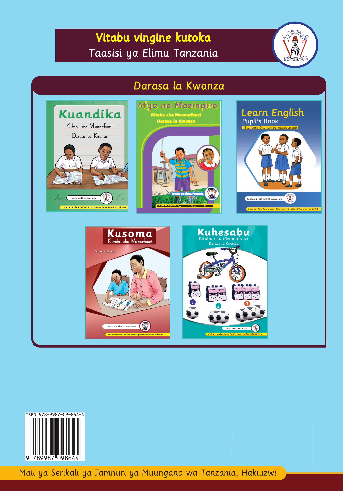

Jalada la nyuma: Vitabu vingine kutoka Taasisi ya Elimu Tanzania, Darasa la Kwanza

Mali ya Serikali ya Jamhuri ya Muungano wa Tanzania, Hakiuzwi.Jalada la nyuma lenye mandharinyuma ya samawati linaonyesha majalada ya vitabu vitano vya Darasa la Kwanza. Majina ya Kiswahili ni Kuandika, Afya na Mazingira, Kusoma na Kuhesabu. Juu kuna nembo ya Taasisi ya Elimu Tanzania. Chini kushoto kuna msimbo pau.Learn English. Pupil's Book. Standard One (Kiswahili Medium Schools). Tanzania Institute of Education. Property of the Government of the United Republic of Tanzania, Not for Sale. ISBN 978-9987-09-864-4.